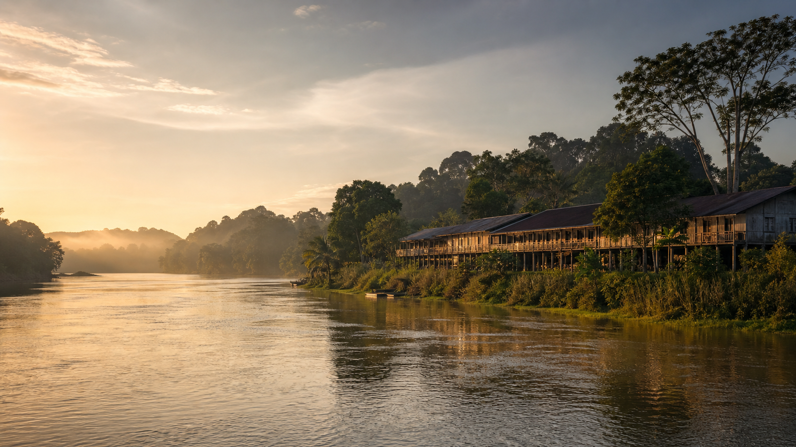
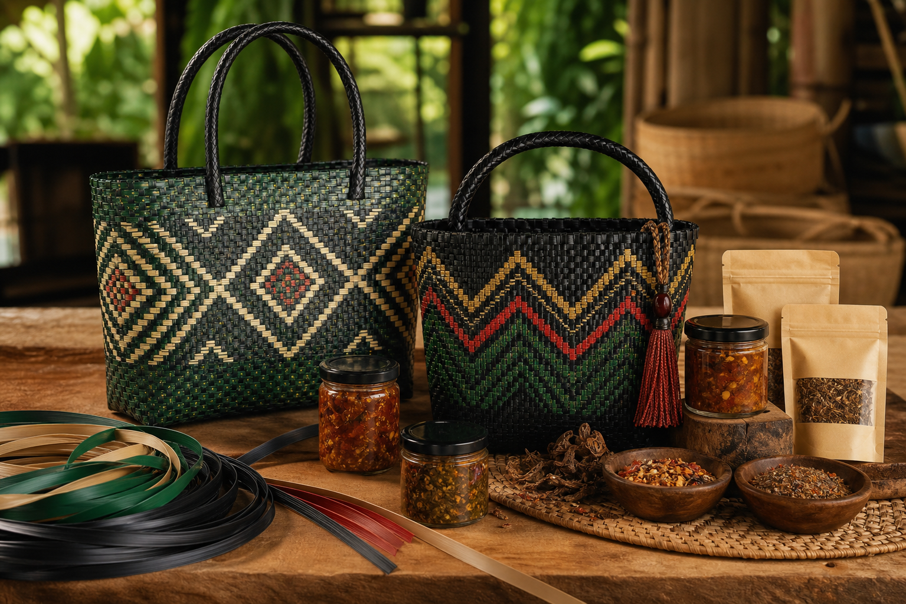

.png)
Forced Pollution
With no formal waste management systems, residents are pushed toward openly burning plastic waste or dumping it into the Rajang River.

Song, Sarawak circular economy
We build dual-impact circular ecosystems in Song Town, turning river-bound plastic waste into high-end Dayak crafts and transforming agricultural surplus into premium shelf-stable delicacies.
Deep within the longhouses of Song, Sarawak, infrastructure gaps threaten local ecosystems and the livelihoods of rural families.
With no formal waste management systems, residents are pushed toward openly burning plastic waste or dumping it into the Rajang River.
Seasonal native crops often rot before reaching market because remote, off-grid longhouses cannot rely on refrigeration.
Low-income households, single-parent families, and undocumented residents face barriers to formal employment and stable income.
Rooted Futures turns local liabilities into high-margin assets through two connected loops: industrial renewal and agricultural innovation.
A product line that combines heritage craft with gourmet food, designed for urban and export markets while keeping value in rural Sarawak.
Start a Stockist Conversation
Heavy-duty recycled plastic strips are blended with traditional geometric weaving to create lightweight, striking, and durable bags.
Hand-woven by single mothers and undocumented residents in Song, with each piece carrying the maker's handwritten signature.
Signature Dabai Relish, Song Wild Spice Mix, and rich seasoning sauces turn fragile harvests into premium pantry products.
Every jar prevents 1.2 kg of farm-gate food waste and directly subsidizes elderly rural farmers.